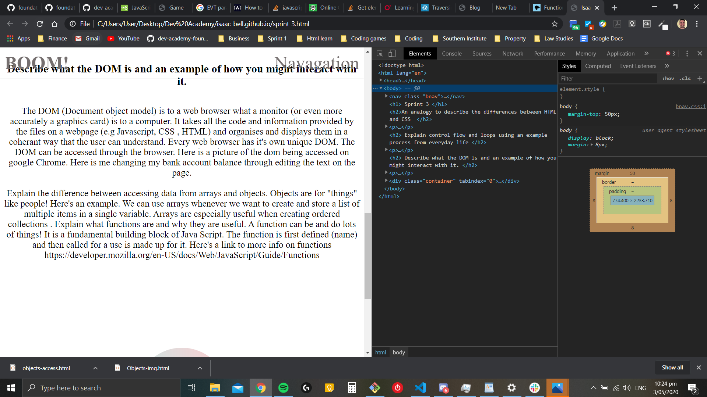
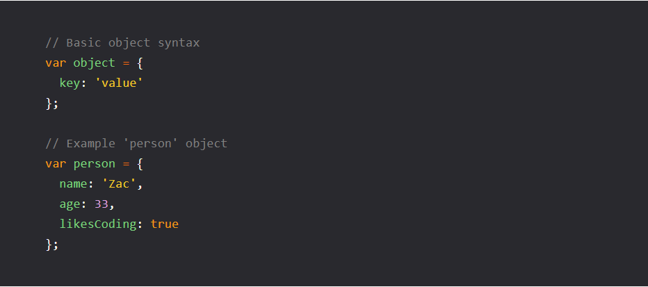
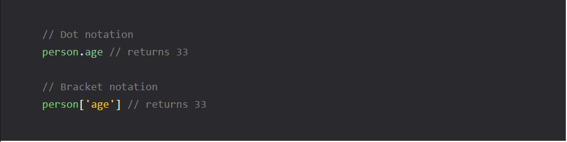
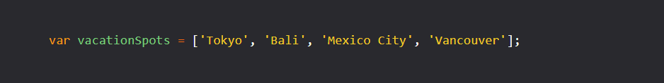

Sprint 3
An analogy to describe the differences between HTML and CSS
The difference between HTML (Hyper text mark-up language) versus CSS(Cascading styling sheets) is like the difference between the frames of a house and the
finishing of a house. The HTML is like the frames, the structure of the page is in there, which rooms are which are defined (header,footer, body, title etc)
and all the text that is in them. The CSS is what those rooms look like, what colour the walls are, the carpet, and all the finishings and "styling" of the house.
Again if we were given books at school, HTML would be the plain black and white textbook and CSS like the artbook.
Explain control flow and loops using an example process from everyday life
Control flow and loops is a decision making process that we use every single day! Let's use the example of waking up in the morning. Let's say the
control flow is called "go to work" . Let's say in this example you wake up at 6am, have a shower, get dressed, have breakfast, make lunch, leave the
house by 7am. All those actions are the control flow, but between each of those steps is a conditional choice that if not met you can return to the
previous one. For exmaple. Wake up, say it's 5am? then what? Then..go back to sleep! Another action is introduced and the loop will return to wake up,
and then only if after 7am, go to next action.
Describe what the DOM is and an example of how you might interact with it.
The DOM (Document object model) is to a web browser what a monitor (or even more accurately a graphics card) is to a computer.
It takes all the code and information provided by the files on a webpage (e.g Javascript, CSS , HTML) and organises and displays them in
a coherant way that the user can understand. Every web browser has it's own unique DOM. The DOM can be accessed through the browser. Here is
a picture of the dom being accessed on google Chrome.

Here is me changing my bank account balance through editing the text on the page.
Explain the difference between accessing data from arrays and objects.
Objects are for "things" like people! Here's an example.

And then to access the object we use

We can use arrays whenever we want to create and store a list of multiple items in a single variable. Arrays are especially useful when creating
ordered collections .
Here's an array

Here's accessing an array

Explain what functions are and why they are useful.
A function can be and do lots of things! It is a fundamental building block of Java Script. The function is first defined (name) and then called for
a use is made up for it. Here's a link to more info on functions